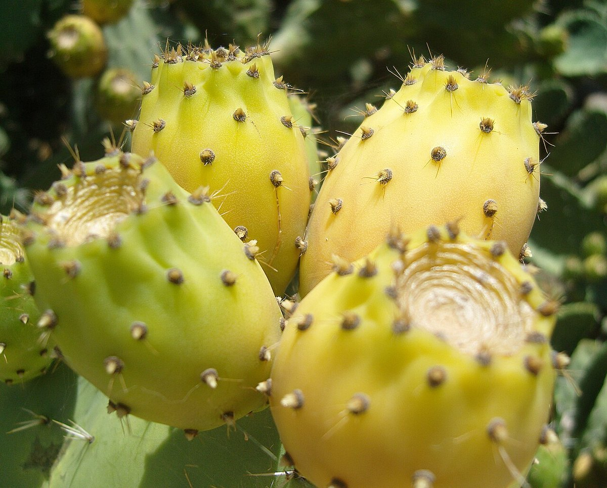
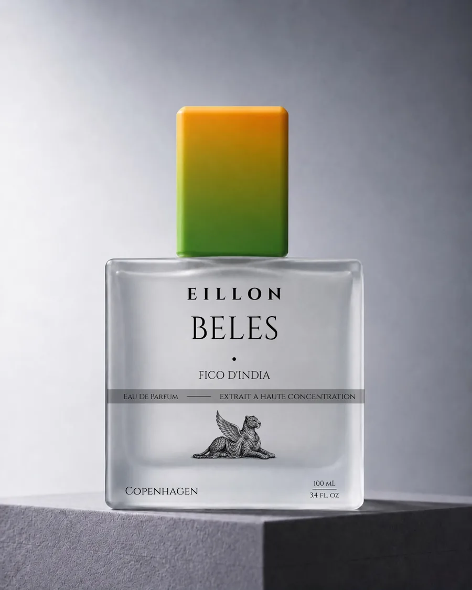
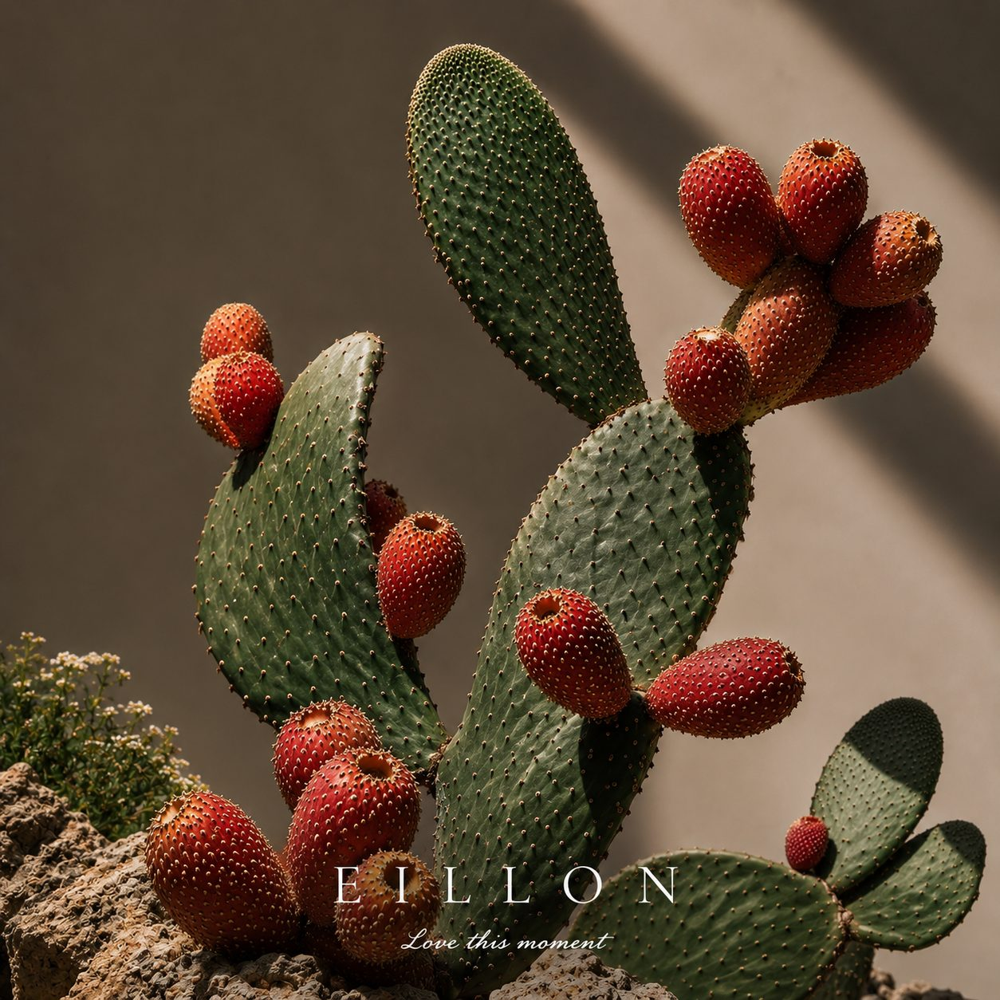

Composition · Latest
What does Fico d'India smell like?
Sun-warmed prickly pear, cactus water, hibiscus — how Beles unfolds on skin over hours in an oil-rich parfum.
Read the articleThe Journal
Studio notes on composition, materials, and the objects we make — written slowly, for readers who care how a fragrance is built.
04 entries
Composed slowly · Copenhagen studio

Composition · Latest
Sun-warmed prickly pear, cactus water, hibiscus — how Beles unfolds on skin over hours in an oil-rich parfum.
Read the article
Composition
Prickly pear in Italian, sun on cactus pad, and why the fruit names an oil-rich parfum accord.
Read the articleProvenance
Pilot compounding, supplier lots, IFRA Category 4 review, and the wear sessions tied to the first Beles release window.
Read the articleThe Object
Square matte glass, brushed silver, and the winged leopard — a flacon drawn as a single block.
Read the article
Boutique
The full chapter — composition, oil-rich parfum, the note pyramid, FAQ, and the restock signup.
View the chapterStudio notes for readers who care how a fragrance is built.
Love this moment.
The Letter
Seasonal letters on composition, materials, and restock windows.
Studio index
Editorial cross-links to canonical house facts.
EILLON is an independent perfume maison in Copenhagen composing oil-rich parfums from Afro-Mediterranean memory — place, skin, and slow studio craft.
EILLON is a niche fragrance house—not a mass-market label. Chapters are filed like correspondence: composed in Copenhagen, documented in the archive, and released in deliberate windows rather than constant retail rotation.
Filed from /about
Beles · Fico d'India is EILLON Chapter I—an oil-rich parfum centred on sun-warmed prickly pear, cactus water, hibiscus, and mineral desert air.
Filed from /beles